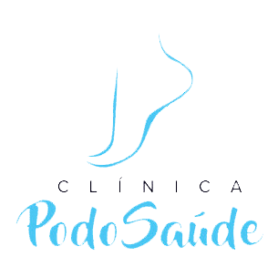

Unha encravada
Avaliação e cuidado técnico para reduzir desconforto e orientar a prevenção.

Agendar pelo WhatsAppAtendimento acolhedor para prevenção, conforto e tratamento dos pés, com orientação profissional e acompanhamento individualizado.
Cuidados com unhas, calosidades, micose, órtese/fibra e bem-estar dos pés.
Avaliação e cuidado técnico para reduzir desconforto e orientar a prevenção.
Acompanhamento podológico e orientação para cuidados durante o tratamento.
Cuidados para aliviar incômodos causados por calos e ressecamento.
Auxílio na correção do crescimento da unha com acompanhamento periódico.
Atendimento preventivo para manter os pés saudáveis e confortáveis.
Atenção especial e orientação preventiva para pacientes que exigem mais cuidado.
Entre em contato pelo WhatsApp para verificar horários disponíveis.
Localização: Cambé - PR
Atendimento: com horário marcado